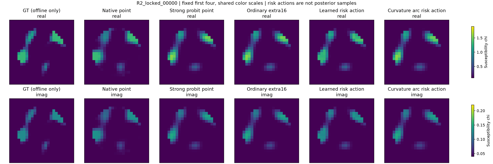
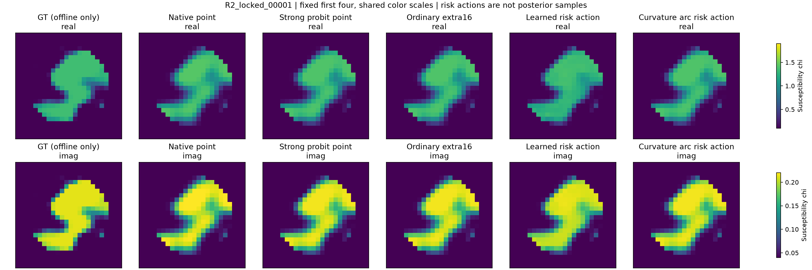
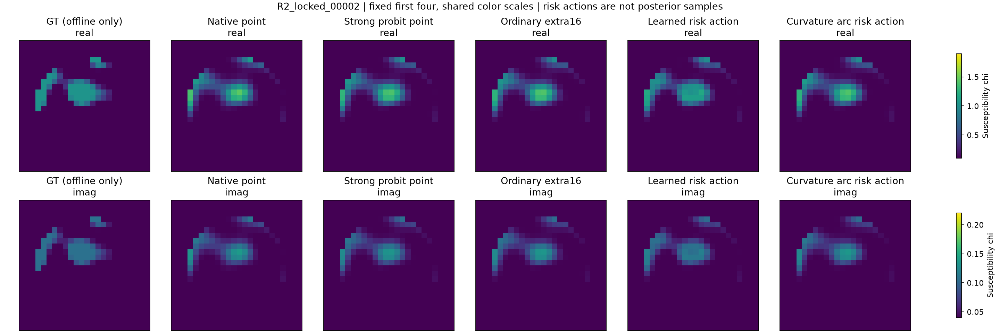
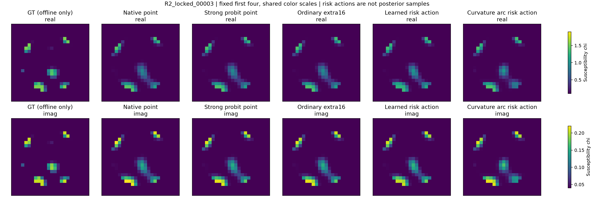

实验与预算已封账。报告和图像可读；完整原始分卷仍在上传，公开下载入口将在上传完成后开放。
以下固定展示首批测试 IDs 00000–00003，未按误差挑图。实部与损耗使用统一色标。GT 只用于已完成线上估计后的独立评分；学习图和轨迹平均是风险动作，不是 posterior samples，也不保证是一份 decoder 材料。








保留的失败与局限
- FULL probability失败仍在。 原P3-L11组参考不合格、SMC祖先退化与Gaussian平均严重偏差保留。本轮新的Student、sourceSMC、动态MALA及corrected learned proposal也没有FULL资格；没有把它们升级为teacher或概率权重。
- 高接受率/高ESS误导。 sourceSMC终点ESS近64但只有一个祖先；constant chains的MCSE0是停滞而非准确。所有undefined函数保持未评估。
- 条件积分数值限制。 field2直接CDF显著减少GH节点混叠，但冻结的严格logZ细化标准未通过，没有改容差取得PASS。二维SLICE不等于66维边缘化。
- 轨迹开发收益未泛化。 第一批主弧长估计风险反而增加1.96%，policy终点更差；次级凸组合也无可靠增量。它们产生可行材料移动，不等于材料风险或后验改进。
- 监督模型也会失败。 大型物理CNN、普通残差MLP及measurement-only网络并未自动胜过物理基线；39/256个对象的主学习图更差，不删失败。所有候选网络只按既有validation选checkpoint。
- 材料风险图不都是新解。 主风险图仅138/256处于原noise-ball。它是含原先验材料的凸矩形中的风险动作，不保证单个P1decoder、posterior sample或数据相容世界。
- 控制执行错误保留。 一次对照误传200epochs在参数检查处退出，0新RHS、0训练；新run按原100epochs补齐，无删除重置。一次旧轨迹风险报告metadata导出失败亦保留，恢复只导出已冻结权重、未重训。
- 严格MAE检查警报保留。 次级38个模型因保存complex64背景，在320个ROI外单元有常数约1.74e-9误差，导致全网格MAE比ROI×256/576高约9.65e-10；原FAIL、容差与评分未改。主MSE/主模型MAE不受影响，独立审查已解释，不能写“全部检查PASS”。
- 归因边界。 几何通道的增量不等于全部25.27%收益。固定训练谱只通过空间包络进入该局部CNN；随机frame对照与第二批结论必须保留。有限训练seed和单prior的正面结果尚不足以作强IEEE TAP新颖性宣言。
- 未执行不伪造。 PPO/SAC、大型diffusion、三维/新Mie、完整trajectory tube概率、合格FULL材料credible intervals与A17新算力胜利均NOT_RUN或NOT_ESTABLISHED。资源充足不是继续消耗失败机制的理由。
失败对象、逐parent风险、全部拒绝、条件链、ancestor history、实际训练history及未成功作业见独立证据Release。未用GT进行任何在线修正或失败替换。